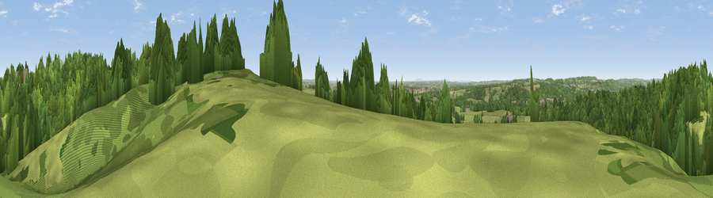

Viewpoint near Oulton
#21130 in England · top 25% of its area beats it · near OultonWhere it is
The exact computed spot (SJ 90575 36225). Click the marker for map links.
The view, rendered

A 360° render of this exact spot computed from the terrain model, tree cover and land cover — summer colours, afternoon light, calibrated against photographs of famous viewpoints. Real trees, hedges and buildings will differ in detail.
The panorama
Grey silhouette: terrain skyline in each direction (720 bearings, Earth curvature and refraction included). Dashed green: skyline with trees (+15 m) and buildings (+8 m) as obstacles. Blue strip: how far the ground is visible on each bearing.
Where the view opens
Wedge length = distance to the farthest visible ground on that bearing (vegetation-aware). Rings at 10, 25 and 50 km.
What fills the view
48% grassland · 38% woodland · 10% cropland · 5% built-up
Angular shares of the visible panorama (visual magnitude), not map area. Landscape diversity 0.48 (0–1 Shannon).
Key numbers
More beautiful places nearby
The staircase of upgrades: each row has a higher view potential than everything closer. Driving times are estimates from straight-line distance, calibrated against real road routing — check an actual route before setting out.
| Place | Direction | Drive | Score |
|---|---|---|---|
| Viewpoint near Oulton | ESE · 0 km | ~1 min | 55.2 |
| Viewpoint near Swynnerton | W · 5 km | ~12 min | 59.4 |
| Viewpoint near Beech | WNW · 6 km | ~13 min | 62.1 |
| Viewpoint near Beech | WNW · 6 km | ~13 min | 63.7 |
| Viewpoint near Madeley Heath | NW · 16 km | ~28 min | 65.4 |
| Viewpoint near Madeley | WNW · 16 km | ~29 min | 66.7 |
| Bignall Hill | NNW · 17 km | ~30 min | 75.2 |
| Viewpoint near Mow Cop | NNW · 22 km | ~36 min | 80.2 |
52.92335, -2.14163 · source: screening · position refined by local search. Computed location — check access rights before visiting.